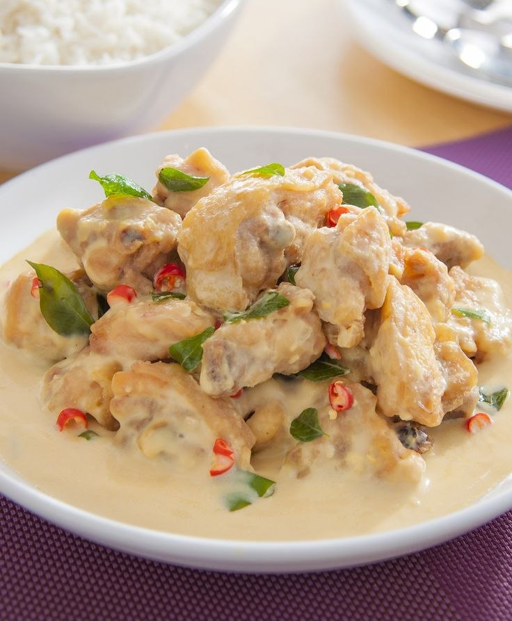

Wet Buttermilk Prawns

Description
A simple sweet and sour dish made up of prawns in buttermilk gravy
Ingredients
- 200ml of evaporated milk
- 1 tbspn salt
- 2-3 tbspn sugar
- 2 tbsp corn flour
- 1 tbsp butter
- 1 tbsp vegetable oil (enough to cover the frying pan)
- 2 pcs bird's eye chilli
- 5 pcs curry leaves
- 300g prawns
Steps
- Cover frying pan with 1 tbsp of vegetable oil, and even the oil, low heat
- Pour the evaporated milk into the pan, and mix with corn flour, butter,
sugar and salt respectively, until a smooth gravy is formed
- Put the shrimps into the frying pan, along with the curry leaves and chopped
bird's eye chilli
- Mix for about 10 minutes
- Pour the contents of the pan into a bowl of a rice or any other foods you wish
to enjoy it with
- Enjoy the freshly made wet buttermilk prawns